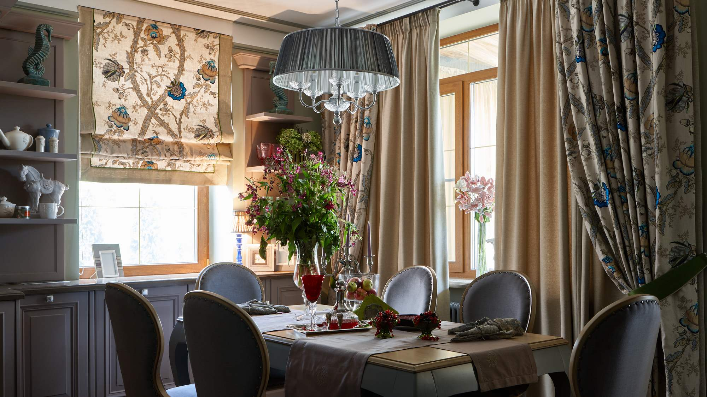
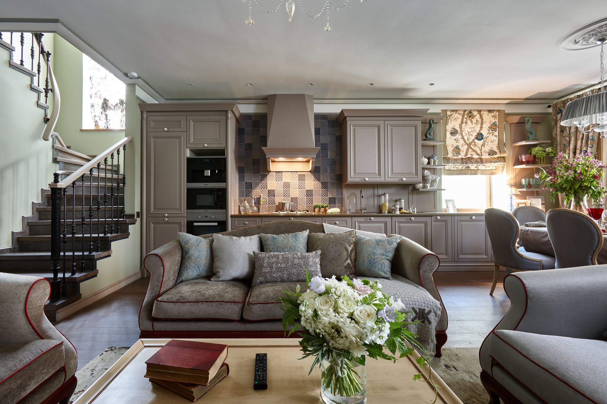
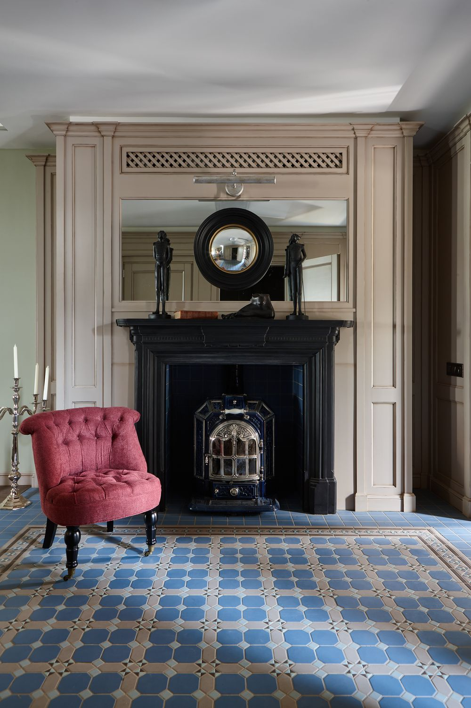
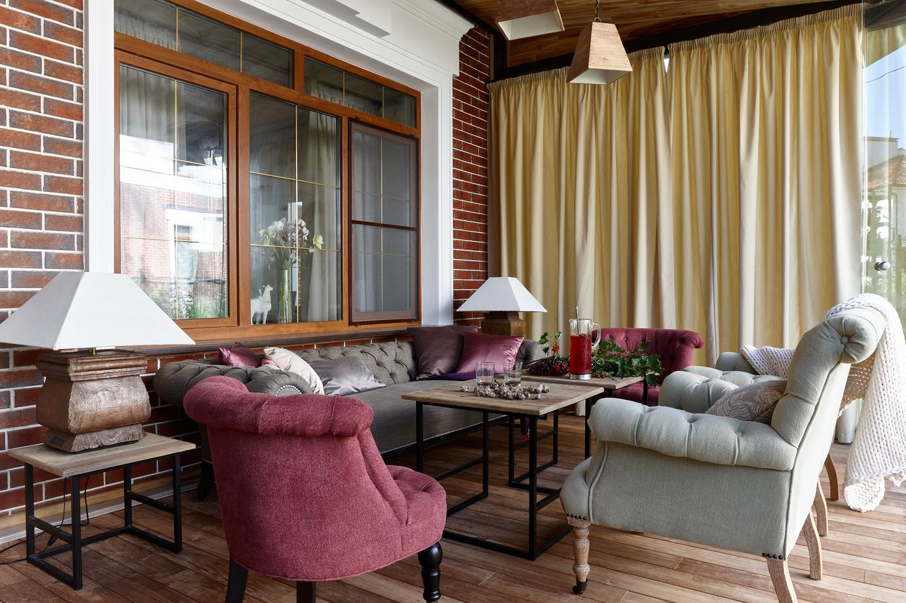
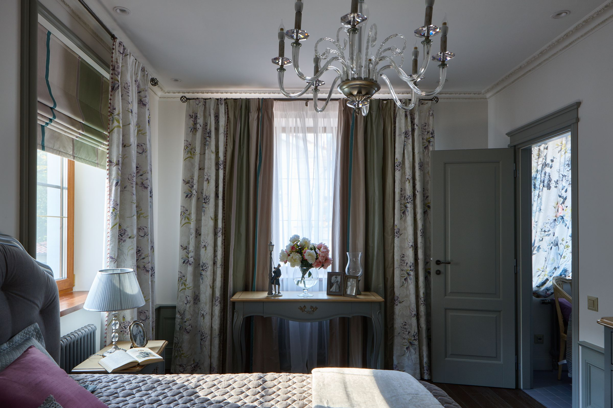
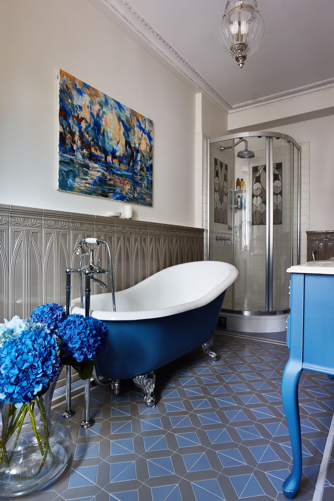
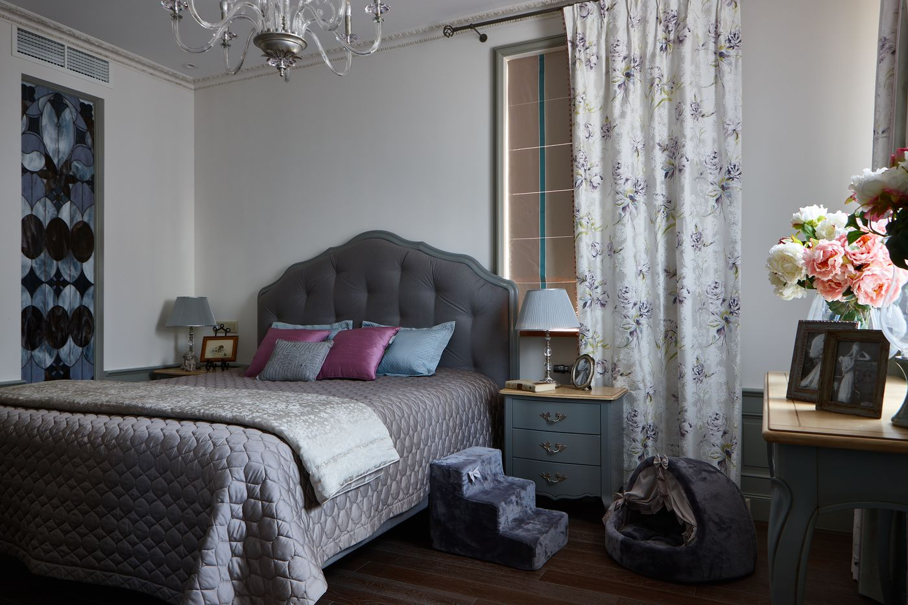

Здравствуйте, я
Светлана Ильина
Дизайнер интерьеров, Москва. Вот уже 25 лет создаю интерьеры премиального уровня: квартиры, загородные дома, мансарды.
- Топ-50 дизайнеров России по версии Archiprofi
- European Property Awards, Лондон, 2017
- INTERIA AWARDS 2016, победитель специальной номинации

«Дача в сосновом бору»

Загородный дом
Весь дом выстроен вокруг антикварной чугунной печи-буржуйки. Интерьер стал победителем трёх международных конкурсов, в том числе INTERIA AWARDS 2016.
Смотреть работу целиком: 12 кадров«Мне хотелось, чтобы в доме была атмосфера дачи. Ведь дача – это образ жизни, воспетый в русской литературе, уголок летней безмятежности… чаепитий с вареньями и букетами полевых цветов.»
Светлана Ильина


«Квартира с камином»
«Интерьер Designers Guild»

Победитель всероссийского конкурса «Лучший интерьер с использованием тканей Designers Guild».
Смотреть работу целиком: 11 кадров«Заказчикам проекта для конкурса Designers Guild я делала уже не первый интерьер, так что они мне полностью доверяли. В итоге проект мы сделали даже без визуализаций.»
Светлана Ильина


«Космос в мансарде»
Признание
В 2016 году – победы в четырёх профессиональных конкурсах за один год. Мои проекты публикуют интерьерные журналы.
Топ-50
дизайнеров России
По версии Archiprofi.European Property Awards
Лондон, 2017
Победа в номинации «Лучший приватный интерьер России» (Interior Design Private Residence Russia).INTERIA AWARDS
2016
Главная архитектурная премия года: проект дома в номинации «Традиции. Дом до 300 кв. м» победил в специальной номинации.Designers Guild
конкурс
Победа во всероссийском конкурсе «Лучший интерьер с использованием тканей Designers Guild». Интерьер представлен на сайте бренда.PINWIN
конкурс
Специальный приз жюри за работу «Девушка PIN UP». Три работы студии в финале восьмого сезона.«Велнес в Вашем доме»
конкурс
Первое место: проект лофта «Кино на пляже».
Salon Interior
Публикация проекта.«Красивые квартиры»
№ 45. В юбилейном сотом номере работа отмечена в числе лучших публикаций журнала за 10 лет.«Красивые дома»
№ 125: «Дом для большой семьи».DOM&Podium
Дом 300 кв. м в Подмосковье на обложке журнала.Houzz
Houzz-тур: дача с антикварной печкой-буржуйкой и открытой террасой.ТОПДИЗАЙНМАГ
2026: обзор керамики с Миланской недели дизайна.
Публикации: Salon Interior, «Красивые квартиры» № 45 и сотый номер, «Красивые дома» № 125, DOM&Podium, Houzz, ТОПДИЗАЙНМАГ.
«Основа хорошего интерьера – это грамотное планировочное решение».
Я пришла в дизайн через согласование перепланировок. Люди обращались ко мне за оформлением документации, и в процессе работы я поняла, что могу предложить им лучшие варианты планировки, чем те, что они показывают.
Очень часто я слышу от своих клиентов, что я присоединила ещё одну комнату к квартире, настолько она стала просторной. Хороший интерьер рождается только в партнёрстве дизайнера и заказчика.
Чем я могу помочь
Консультация по планировке
Если вы не хотите потратить деньги на ремонт и остаться недовольными результатом.
Дизайн интерьера под ключ
Design&Style
Для тех, кто приобрёл цементную коробку и хочет превратить её в свой уютный и красивый дом. Веду проект от концепта до полной реализации.
Декорирование
White box
Для тех, кто купил квартиру или дом с отделкой White box и хочет подобрать мебель, светильники, сантехнику и отделочные материалы.
Интерьерный стайлинг
Full Style
Для тех, кто хочет обновить интерьер без ремонта: с помощью декора и замены текстиля кардинально поменять настроение.
Как идёт проект под ключ
Стоимость – после встречи на объекте.
- Обмер и заданиеОбмер и фотофиксация помещения, техническое задание.
- ПланировкаДо трёх вариантов планировки.
- СтилистикаОтделочные материалы, мебель, светильники, оборудование; итоговая визуализация.
- Рабочий проектАльбом чертежей, по которому идёт ремонт; работа с подрядчиками по инженерным проектам.
- Авторский надзорСлежу, чтобы ремонт шёл точно по проекту.
- Комплектация и декорПоставщики, заказы, доставка, приёмка. Всё доставим, распакуем, навесим, расставим.
Ещё работы
С чего начать
Позвоните или напишите в Телеграм. Расскажите, где объект, какая площадь, какой стиль вам близок и какая услуга нужна. Дальше – встреча на объекте.
+7 916 619-99-85Москва